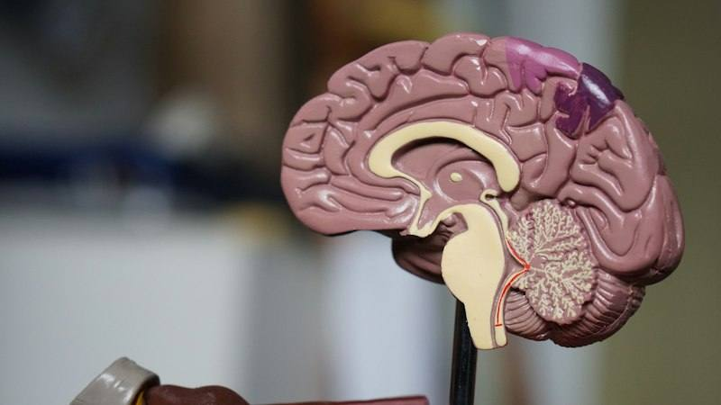

Biomedical Sciences
Biomedical Sciences
Biomedical sciences studies how the human body works in health and disease, from molecules and cells to organs and systems. It gives a grounding in medically related fields such as physiology, pharmacology and genetics, and builds laboratory and research skills.
What do graduates do?
- Researcher at universities, pharmaceutical and bioscience companies
- Clinical or technical laboratory specialist
- Medical writing and health communication
- Healthcare management
- Teaching
- Graduate entry medicine, veterinary medicine or a PhD
Which subjects matter?
Manchester's typical offer is AAB, including two of biology, chemistry, physics and mathematics.
This is one example school’s requirement; requirements vary by school and country.
Examples of schools where you can study this subject
9 schools in 6 countries. Programmes were checked on the schools’ own websites. These are only examples; every country has many more options. We choose the schools that fit your budget, documents and goals together.
 United Kingdom
United Kingdom
 Ireland
Ireland
 USA
USA
 Canada
Canada
 Australia
Australia
 New Zealand
New Zealand
Other fields of study in this category
Last checked: November 2026.

Is Biomedical Sciences right for you?
Let's talk about interests, strong subjects and target countries, and narrow down the subject and school options together.